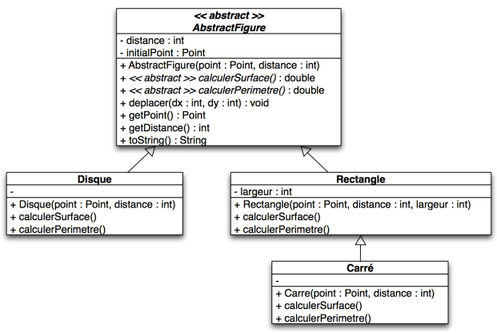
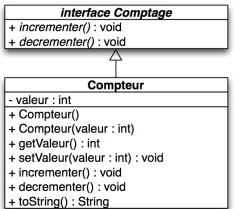

La Programmation Orientée Objet est une approche de programmation reposant sur la notion d’objet.
Elle sert à regrouper les attributs et méthodes au sein d'une même entité et est structurée autour de classes.
Une classe est le modèle d'un objet et définit un nouveau type de donnée.
Un objet est une instance concrète d’une classe : il est créé en mémoire lors de l’exécution du programme.
Il regroupe aussi à la fois des données, appelées attributs, et des traitements, appelés méthodes.
Ces données sont alors protégées par l'encapsulation, un principe qui empêche tout accès direct aux attributs depuis l’extérieur de la classe.
La POO repose également sur le principe de héritage qui permet de créer une nouvelle classe à partir d'une classe existante, plus précisemment permet aux
classes dérivées de récupérer les attributs et méthodes de la classe (mère).
Enfin elle introduit le polymorphisme qui permet de manipuler des objets de types différents de manière uniforme.
Ce dernier peut être simple, lorsqu’une même méthode est définie plusieurs fois avec des signatures différentes et que le choix est effectué à la compilation,
ou dynamique, lorsqu’une méthode redéfinie dans une classe dérivée est appelée à l’exécution via une référence de la classe de base, en fonction du type réel de l’objet.
Classes abstraites
La classe abstraite est une classe non instanciable. Elle représente le concept qui sur la base d'une autre classe,
contient au moins une méthode abstraite.Elle peut contenir des méthodes abstraites, c’est-à-dire déclarées sans implémentation, dont la définition est laissée aux classes dérivées.
Comme pour une méthode abstraite, le nom de la classe sera précédé du mot-clef abstract.
Le schéma ci-dessous illustre une classe abstraite servant de modèle général,
dont héritent plusieurs classes dérivées qui implémentent les méthodes abstraites et peuvent ajouter leurs propres comportements.

Diagramme de classe représentant la classe abstraite.
Interface
L'interface est une structure totalement abstraite. Elle est déclarée dans une interface et déclare des méthodes sans fournir leur implémentation,
et impose donc aux classes implémentantes de définir leur comportement. Contrairement à l'héritage de classe, une classe peut implémenter plusieurs interfaces, ce qui permet de séparer
la définition des comportements et de garantir un comportement qui sera présent dans les classes concernées.

Diagramme de classe représentant une interface.